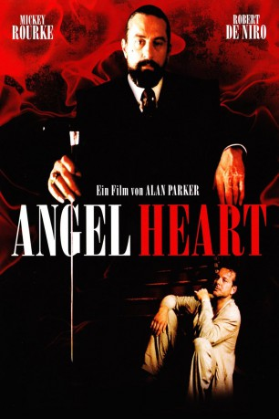

#1441 Angel Heart
 
 IMDB-Wertung: 7.3 / 10
IMDB-Wertung: 7.3 / 10  Metascore: 61
Metascore: 61 
Harry Angel (Mickey Rourke) arbeitet im New York der 50er als anrüchiger Privatdetektiv. Eines Tages bietet ihm der mysteriöse Louis Cypher (Robert de Niro) viel Geld dafür, einen Musiker namens Johnny Favorite aufzuspüren, der bei Cyphers Gattin angeblich noch Schulden hat. Wenn auch widerwillig lässt sich Angel auf das Geschäft ein. Schnell findet er heraus, dass Favorite in einer Klinik wegen einer Amnesie behandelt wurde. In New Orleans trifft er schließlich auf Epiphany (Lisa Bonet), die Tochter einer bereits verstorbenen, ehemaligen Geliebten des Verschwundenen, mit der sich Angel auf eine Affäre einlässt. Doch offenbar sind seine Ermittlungen nicht unentdeckt geblieben. Alle von ihm befragten Zeugen werden der Reihe nach auf bestialische Weise ermordet...
Jahr: 1987
Dauer: 113 Minuten
FSK: 16
Land: England Studio: Jugendfilm-VerleihTonspuren:
Untertitel: Deutsch,
Auflösung: 1080p (1920x1038) Größe: 17305 MB
Genre: Thriller, Horror, Mystery
Regisseur:  Alan Parker
Alan Parker
Drehbuch: William Hjortsberg, Alan Parker
Soundtrack: Trevor Jones
Darsteller:
 Mickey Rourke als Harry Angel
Mickey Rourke als Harry Angel Robert De Niro als Louis Cyphre
Robert De Niro als Louis Cyphre- Lisa Bonet als Epiphany Proudfoot
 Charlotte Rampling als Margaret Krusemark
Charlotte Rampling als Margaret Krusemark- Dann Florek als Herman Winesap
 Kathleen Wilhoite als Nurse
Kathleen Wilhoite als Nurse- George Buck als Izzy
 Judith Drake als Izzy's Wife
Judith Drake als Izzy's Wife Pruitt Taylor Vince als Det. Deimos
Pruitt Taylor Vince als Det. Deimos- Rick Washburn als Cajun Heavy #1
- Oscar Best als Voodoo Dancer
 Mark L. Taylor als Voodoo Dancer
Mark L. Taylor als Voodoo Dancer- Stocker Fontelieu als Ethan Krusemark
- Brownie McGhee als Toots Sweet
 Michael Higgins als Dr. Albert Fowler
Michael Higgins als Dr. Albert Fowler- Elizabeth Whitcraft als Connie
- Eliott Keener als Det. Sterne
- Charles Gordone als Spider Simpson
- Gerald Orange als Pastor John
- Peggy Severe als Mammy Carter - Herb Store Proprietor
- Dave Petitjean als Baptism Preacher
- Neil Newlon als Cajun Heavy #2
- Oakley Dalton als Big Jacket
- Yvonne Bywaters als Margaret's Maid
- Loys T. Bergeron als Mike
- Joshua Frank als Toothless
- Karmen Harris als Harlem Mourner
- Nicole Burdette als Ellie
- Kendall Lupe als Oyster Cajun #1
- Percy Martin als Oyster Cajun #2
- Viola Dunbar als Concierge
- Murray Bandel als Bartender
- Jarrett Narcisse als Epiphany's Child
- Ernest Watson als Oyster Bar Saxophonist
- Rickie Monie als Oyster Bar Pianist
- Sugar Blue als Toots Sweet Band - Harmonica
- Pinetop Perkins als Toots Sweet Band - Piano
- Deacon John Moore als Toots Sweet Band - Lead Guitar
- Richard Payne als Toots Sweet Band - Double Bass
- W. Alonzo Stewart als Toots Sweet Band - Drums
- Lillian Boutte als Toots Sweet Band - Vocalist
- Joel Adam als Tap Dancer
- Darrell Beasley als Tap Dancer
- Stephen Beasley als Tap Dancer
- Jerome Reddick als Tap Dancer
- Louis Freddie Kohlman als Voodoo Drums
- Stephen Kenyatta Simon als Voodoo Drums
- Curtis Pierre als Voodoo Drums
- Kufaru Aaron Mouton als Voodoo Drums
- Roselyn Lionheart als Voodoo Musician
Datei: X:\1987\Angel Heart (1987, FSK16, 1920x1038).mkv seit 06.07.2015
Festplatte: HD 1987-1991
 Es gibt insgesamt 50 Filme in der Gruppe '1987'
Es gibt insgesamt 50 Filme in der Gruppe '1987'